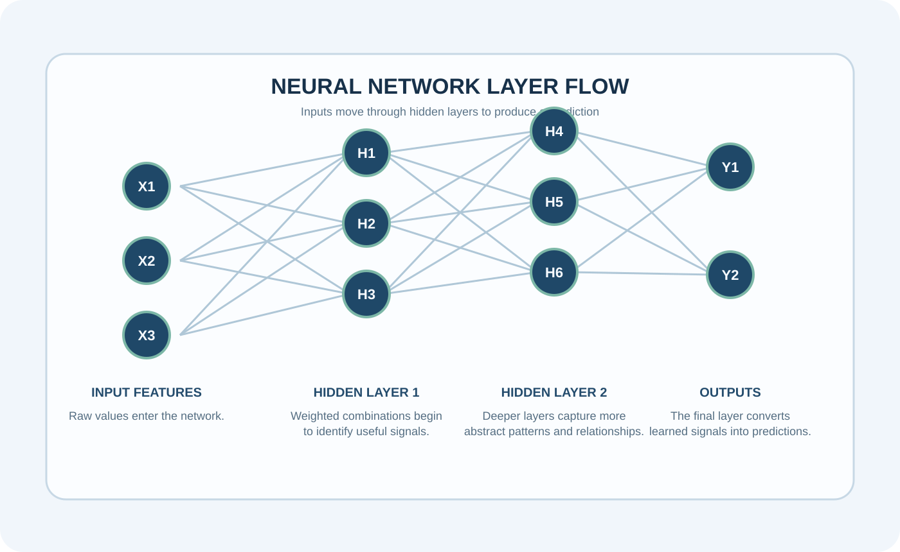
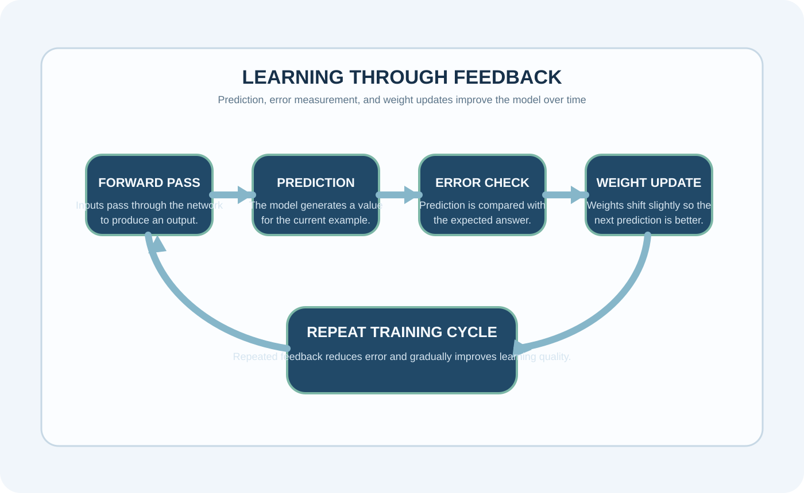

Artifact Information
This artifact focuses on explaining neural networks in a way that is visually clear, academically useful, and easier to understand than a dense technical explanation alone.
Introduction
The artifact presents neural networks as a system that becomes stronger through repeated exposure to data, adjusting internal patterns as it learns from feedback.
Description
The project explains how inputs move into hidden layers, how outputs are produced, and how repeated training helps the model improve over time.
The emphasis is on making the concept visually understandable so that the learning process, pattern recognition, and role of feedback are easier to follow.


Objective
- Explain the structure of neural networks
- Show how learning improves through training
- Present technical AI ideas visually and clearly
Process
- Mapped the movement of information from input to output
- Connected feedback with model improvement across training cycles
- Used visuals to simplify technical learning behavior
- Organized the explanation so a non-technical audience could follow the concept more easily
Tools and Technologies Used
Value Proposition
This artifact helps simplify one of the foundational ideas in AI by combining explanation with visuals that make the learning process easier to understand.
Unique Value: Makes neural-network learning more approachable and visual.
Relevance: Useful for explaining core AI concepts in academic and professional settings.
Reflection
This project improved my ability to explain technical AI ideas in a way that remains accurate while still being accessible to a broader audience.
References
Neural-network learning resources; introductory AI materials; Python visualization references.